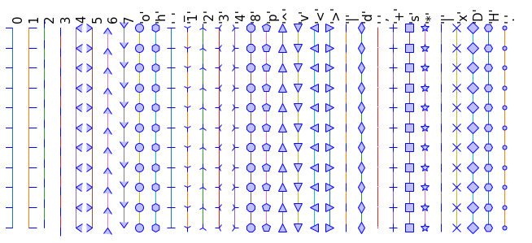

Matplotlib: plotting#
Authors: Nicolas Rougier, Mike Müller, Gaël Varoquaux
Introduction#
Matplotlib is probably the most used Python package for 2D-graphics. It provides both a quick way to visualize data from Python and publication-quality figures in many formats. We are going to explore matplotlib in interactive mode covering most common cases.
IPython, Jupyter, and matplotlib modes#
The Jupyter notebook and the IPython enhanced interactive Python, are tuned for the scientific-computing workflow in Python, in combination with Matplotlib:
For interactive matplotlib sessions, turn on the matplotlib mode.
IPython sessions#
To make plots open interactively in an IPython console session use the following magic command:
%matplotlib
Using matplotlib backend: module://matplotlib_inline.backend_inline
Jupyter notebook#
The Jupyter Notebook uses Matplotlib mode by default; that is, it inserts the figures into the notebook, as you run Matplotlib commands.
pyplot#
pyplot provides a procedural interface to the matplotlib object-oriented plotting library. It is modeled closely after Matlab™. Therefore, the majority of plotting commands in pyplot have Matlab™ analogs with similar arguments. Important commands are explained with interactive examples.
import matplotlib.pyplot as plt
Simple plot#
In this section, we want to draw the cosine and sine functions on the same plot. Starting from the default settings, we’ll enrich the figure step by step to make it nicer.
First step is to get the data for the sine and cosine functions:
import numpy as np
X = np.linspace(-np.pi, np.pi, 256)
C, S = np.cos(X), np.sin(X)
X is now a numpy array with 256 values ranging from \(-\pi\) to \(+\pi\)
(included). C is the cosine (256 values) and S is the sine (256
values).
To run the code, you can execute it in a Jupyter notebook or type it in an IPython interactive session:
$ ipython --matplotlib
This brings us to the IPython prompt:
IPython 0.13 -- An enhanced Interactive Python.
? -> Introduction to IPython's features.
%magic -> Information about IPython's 'magic' % functions.
help -> Python's own help system.
object? -> Details about 'object'. ?object also works, ?? prints more.
Plotting with default settings#
Note
Matplotlib comes with a set of default settings that allow customizing all kinds of properties. You can control the defaults of almost every property in matplotlib: figure size and dpi, line width, color and style, axes, axis and grid properties, text and font properties and so on.
import numpy as np
import matplotlib.pyplot as plt
X = np.linspace(-np.pi, np.pi, 256)
C, S = np.cos(X), np.sin(X)
plt.plot(X, C)
plt.plot(X, S);
Note
You will notice that we used a semicolon (;) to end the last line in the
cell above. This is to prevent Jupyter or IPython echoing the return value of
this final expression back to us in the notebook or console session. It has no other effect; it does not affect the execution of the code.
Instantiating defaults#
In the plotting code below, you will see that we’ve instantiated (and commented) all the figure settings that influence the appearance of the plot.
Note
The settings have been explicitly set to their default values, but now you can interactively play with the values to explore their affect (see Line properties and Line styles below).
import numpy as np
import matplotlib.pyplot as plt
# Create a figure of size 8x6 inches, 80 dots per inch
plt.figure(figsize=(8, 6), dpi=80)
# Create a new subplot from a grid of 1x1
plt.subplot(1, 1, 1)
X = np.linspace(-np.pi, np.pi, 256)
C, S = np.cos(X), np.sin(X)
# Plot cosine with a blue continuous line of width 1 (pixels)
plt.plot(X, C, color="blue", linewidth=1.0, linestyle="-")
# Plot sine with a green continuous line of width 1 (pixels)
plt.plot(X, S, color="green", linewidth=1.0, linestyle="-")
# Set x limits
plt.xlim(-4.0, 4.0)
# Set x ticks
plt.xticks(np.linspace(-4, 4, 9))
# Set y limits
plt.ylim(-1.0, 1.0)
# Set y ticks
plt.yticks(np.linspace(-1, 1, 5));
# You could also save this figure using 72 dots per inch with:
# plt.savefig("exercise_2.png", dpi=72)
Changing colors and line widths#
Note
First step, we want to have the cosine in blue and the sine in red and a slightly thicker line for both of them. We’ll also slightly alter the figure size to make it more horizontal.
# Generate the plot.
plt.figure(figsize=(10, 6), dpi=80)
plt.plot(X, C, color="blue", linewidth=2.5, linestyle="-")
plt.plot(X, S, color="red", linewidth=2.5, linestyle="-");
# Get the current figure (gcf) into a variable for later use.
fig_to_update = plt.gcf()
Note
The final line fig_to_update = plt.gcf() uses plt.gcf() to Get the Current Figure — the figure we’ve just built in the cell. We then store that figure in the fig_to_update variable, so we can restore it, and update it, in the cells below. This is not a very common pattern in general, we are using it here to show you how to build up a figure in steps.
Setting limits#
Hint
Documentation
xlim()commandylim()command
Note
Current limits of the figure are a bit too tight and we want to make some space in order to clearly see all data points.
Note
Following on from the note above, for the purposes of the tutorial, we first
restore the figure we stored above (with plt.figure(fig_to_update), then we
add the limits to the figure, and finally, we press Jupyter to display the
figure by putting the figure variable as an expression in the last line of the
cell.
Again, this pattern of restore, update, redisplay is not a very common one in ordinary use of Matplotlib; we use it here to allow us to separate the various steps in the process of updating the figure.
# Restore previous figure, ready to update below.
plt.figure(fig_to_update)
# Setting the axis limits.
plt.xlim(X.min() * 1.2, X.max() * 1.2)
plt.ylim(C.min() * 1.2, C.max() * 1.2)
# Make Jupyter display updated figure.
fig_to_update
Setting ticks#
Note
Current ticks are not ideal because they do not show the interesting values (\(\pm \pi\), \(\pm \frac{\pi}{2}\)) for sine and cosine. We’ll change them such that they show only these values.
# Restore figure we are working on.
plt.figure(fig_to_update)
# Set x and y ticks.
plt.xticks([-np.pi, -np.pi / 2, 0, np.pi / 2, np.pi])
plt.yticks([-1, 0, +1])
# Make Jupyter display updated figure.
fig_to_update
Setting tick labels#
Hint
Documentation
xticks()commandyticks()command
Note
Ticks are now properly placed but their label is not very explicit. We could guess that 3.142 is \(\pi\) but it would be better to make it explicit. When we set tick values, we can also provide a corresponding label in the second argument list. Note that we’ll use latex to allow for nice rendering of the label.
# Restore figure
plt.figure(fig_to_update)
# Update tick labels.
plt.xticks([-np.pi, -np.pi/2, 0, np.pi/2, np.pi],
[r'$-\pi$', r'$-\pi/2$', r'$0$', r'$+\pi/2$', r'$+\pi$'])
plt.yticks([-1, 0, +1],
[r'$-1$', r'$0$', r'$+1$'])
# Force display of updated figure.
fig_to_update
Moving spines#
Note
Spines are the lines connecting the axis tick marks and noting the boundaries of the data area. They can be placed at arbitrary positions and until now, they were on the border of the axis. We’ll change that since we want to have them in the middle. Since there are four of them (top/bottom/left/right), we’ll discard the top and right by setting their color to none and we’ll move the bottom and left ones to coordinate 0 in data space coordinates.
# Restore figure
plt.figure(fig_to_update)
# Update spines.
ax = plt.gca() # gca stands for 'get current axis'
ax.spines['right'].set_color('none')
ax.spines['top'].set_color('none')
ax.xaxis.set_ticks_position('bottom')
ax.spines['bottom'].set_position(('data',0))
ax.yaxis.set_ticks_position('left')
ax.spines['left'].set_position(('data',0))
# Force display of updated figure.
fig_to_update
Adding a legend#
Note
Let’s add a legend in the upper left corner. This only requires adding the keyword argument label (that will be used in the legend box) to the plot commands.
# Restore figure
plt.figure(fig_to_update)
# Add legend.
plt.plot(X, C, color="blue", linewidth=2.5, linestyle="-", label="cosine")
plt.plot(X, S, color="red", linewidth=2.5, linestyle="-", label="sine")
plt.legend(loc='upper left')
# Force display of updated figure.
fig_to_update
Annotate some points#
Note
Let’s annotate some interesting points using the annotate command. We chose the \(2\pi / 3\) value and we want to annotate both the sine and the cosine. We’ll first draw a marker on the curve as well as a straight dotted line. Then, we’ll use the annotate command to display some text with an arrow.
# Restore figure
plt.figure(fig_to_update)
# Annotate points.
t = 2 * np.pi / 3
plt.plot([t, t], [0, np.cos(t)], color='blue', linewidth=2.5, linestyle="--")
plt.scatter([t, ], [np.cos(t), ], 50, color='blue')
plt.annotate(r'$cos(\frac{2\pi}{3})=-\frac{1}{2}$',
xy=(t, np.cos(t)), xycoords='data',
xytext=(-90, -50), textcoords='offset points', fontsize=16,
arrowprops=dict(arrowstyle="->", connectionstyle="arc3,rad=.2"))
plt.plot([t, t],[0, np.sin(t)], color='red', linewidth=2.5, linestyle="--")
plt.scatter([t, ],[np.sin(t), ], 50, color='red')
plt.annotate(r'$sin(\frac{2\pi}{3})=\frac{\sqrt{3}}{2}$',
xy=(t, np.sin(t)), xycoords='data',
xytext=(+10, +30), textcoords='offset points', fontsize=16,
arrowprops=dict(arrowstyle="->", connectionstyle="arc3,rad=.2"))
# Force display of updated figure.
fig_to_update
Devil is in the details#
Note
The tick labels are now hardly visible because of the blue and red lines. We can make them bigger and we can also adjust their properties such that they’ll be rendered on a semi-transparent white background. This will allow us to see both the data and the labels.
# Restore figure
plt.figure(fig_to_update)
# Set properties of tick labels.
for label in ax.get_xticklabels() + ax.get_yticklabels():
label.set_fontsize(16)
label.set_bbox(dict(facecolor='white', edgecolor='None', alpha=0.65))
# Force display of updated figure.
fig_to_update
Figures, Subplots, Axes and Ticks#
A “figure” in matplotlib means the whole window in the user interface. Within this figure there can be “subplots”.
Note
So far we have used implicit figure and axes creation. This is handy for
fast plots. We can have more control over the display using figure,
subplot, and axes explicitly. While subplot positions the plots in a
regular grid, axes allows free placement within the figure. Both can be
useful depending on your intention. We’ve already worked with figures and
subplots without explicitly calling them. When we call plot, matplotlib
calls gca() to get the current axes and gca in turn calls gcf() to
get the current figure. If there is none it calls figure() to make one,
strictly speaking, to make a subplot(111). Let’s look at the details.
Figures#
Note
A figure is a window in the GUI that has “Figure #” as title. Figures are numbered starting from 1 as opposed to the normal Python way starting from 0. This is clearly MATLAB-style. There are several parameters that determine what the figure looks like:
Argument |
Default |
Description |
|---|---|---|
|
|
number of figure |
|
|
figure size in inches (width, height) |
|
|
resolution in dots per inch |
|
|
color of the drawing background |
|
|
color of edge around the drawing background |
|
|
draw figure frame or not |
Note
The defaults can be specified in the resource file and will be used most of the time. Only the number of the figure is frequently changed.
As with other objects, you can set figure properties with the plt.setp
function, or with the set_(something) methods.
When you work with the GUI, rather than in a notebook, you can close a figure
by clicking on the x in the upper right corner. But you can close a figure
programmatically by calling close. Depending on the argument it closes (1) the
current figure (no argument), (2) a specific figure (figure number or figure
instance as argument), or (3) all figures ("all" as argument).
# Useful working in a GUI outside the notebook.
plt.close(1) # Closes figure 1
Subplots#
Note
With subplot you can arrange plots in a regular grid. You need to specify the number of rows and columns and the number of the plot. Note that the gridspec command is a more powerful alternative.
Axes#
Axes are very similar to subplots but allow placement of plots at any location in the figure. So if we want to put a smaller plot inside a bigger one we do so with axes.
Ticks#
Well formatted ticks are an important part of publishing-ready
figures. Matplotlib provides a totally configurable system for ticks. There are
tick locators to specify where ticks should appear and tick formatters to give
ticks the appearance you want. Major and minor ticks can be located and
formatted independently from each other. Per default minor ticks are not shown,
i.e. there is only an empty list for them because it is as NullLocator (see
below).
Tick Locators#
Tick locators control the positions of the ticks. They are set as follows:
ax = plt.gca()
ax.xaxis.set_major_locator(eval(locator))
There are several locators for different kind of requirements:
All of these “locators” (see code above) derive from the base class
matplotlib.ticker.Locator. You can make your own locator deriving
from it. Handling dates as ticks can be especially tricky. Therefore,
matplotlib provides special locators in matplotlib.dates.
Other Types of Plots: examples and exercises#
Regular Plots#
Exercise 27
Starting from the code below, try to reproduce the graphic taking care of filled areas:
Hint
You need to use the fill_between() command.
n = 256
X = np.linspace(-np.pi, np.pi, n)
Y = np.sin(2 * X)
plt.plot(X, Y + 1, color='blue', alpha=1.00)
plt.plot(X, Y - 1, color='blue', alpha=1.00)
Click on the hidden code for the figure above for solution.
Scatter Plots#

Exercise 28
Starting from the code below, try to reproduce the graphic taking care of marker size, color and transparency.
Hint
Color is given by angle of (X,Y).
n = 1024
rng = np.random.default_rng()
X = rng.normal(0,1,n)
Y = rng.normal(0,1,n)
plt.scatter(X,Y)

Click on the hidden code for the figure above for solution.
Bar Plots#

Exercise 29
Starting from the code below, try to reproduce the graphic by adding labels for red bars.
Hint
You need to take care of text alignment.
n = 12
X = np.arange(n)
rng = np.random.default_rng()
Y1 = (1 - X / float(n)) * rng.uniform(0.5, 1.0, n)
Y2 = (1 - X / float(n)) * rng.uniform(0.5, 1.0, n)
plt.bar(X, +Y1, facecolor='#9999ff', edgecolor='white')
plt.bar(X, -Y2, facecolor='#ff9999', edgecolor='white')
for x, y in zip(X, Y1):
plt.text(x + 0.4, y + 0.05, '%.2f' % y, ha='center', va='bottom')
plt.ylim(-1.25, +1.25)

Click on the hidden code for the figure above for solution.
Contour Plots#
Exercise 30
Starting from the code below, try to reproduce the graphic taking care of the colormap (see [Colormaps] below).
Hint
You need to use the clabel() command.
def f(x, y):
return (1 - x / 2 + x ** 5 + y ** 3) * np.exp(-x ** 2 -y ** 2)
n = 256
x = np.linspace(-3, 3, n)
y = np.linspace(-3, 3, n)
X, Y = np.meshgrid(x, y)
plt.contourf(X, Y, f(X, Y), 8, alpha=.75, cmap='jet')
C = plt.contour(X, Y, f(X, Y), 8, colors='black', linewidth=.5)
Click on the hidden code for the figure above for solution.
Imshow#
Exercise 31
Starting from the code below, try to reproduce the graphic taking care of colormap, image interpolation and origin.
Hint
You need to take care of the origin of the image in the imshow command and
use a colorbar()
def f(x, y):
return (1 - x / 2 + x ** 5 + y ** 3) * np.exp(-x ** 2 - y ** 2)
n = 10
x = np.linspace(-3, 3, 4 * n)
y = np.linspace(-3, 3, 3 * n)
X, Y = np.meshgrid(x, y)
plt.imshow(f(X, Y))
Click on the hidden code for the figure above for solution.
Pie Charts#
Exercise 32
Starting from the code below, try to reproduce the graphic taking care of colors and slices size.
Hint
You need to modify Z.
rng = np.random.default_rng()
Z = rng.uniform(0, 1, 20)
plt.pie(Z);

Click on the hidden code for the figure above for solution.
Quiver Plots#
Exercise 33
Starting from the code below, try to reproduce the graphic taking care of colors and orientations.
Hint
You need to draw arrows twice.
n = 8
X, Y = np.mgrid[0:n, 0:n]
plt.quiver(X, Y)
Click on the hidden code for the figure above for solution.
Grids#

Exercise 34
Starting from the code below, try to reproduce the graphic taking care of line styles.
axes = plt.gca()
axes.set_xlim(0, 4)
axes.set_ylim(0, 3)
axes.set_xticklabels([])
axes.set_yticklabels([])
Click on the hidden code for the figure above for solution.
Multi Plots#
Exercise 35
Starting from the code below, try to reproduce the graphic.
Hint
You can use several subplots with different partition.
plt.subplot(2, 2, 1)
plt.subplot(2, 2, 3)
plt.subplot(2, 2, 4)
Click on the hidden code for the figure above for solution.
Polar Axis#

Exercise 36
Hint
You only need to modify the axes line
Starting from the code below, try to reproduce the graphic.
plt.axes([0, 0, 1, 1])
N = 20
theta = np.arange(0., 2 * np.pi, 2 * np.pi / N)
rng = np.random.default_rng()
radii = 10 * rng.random(N)
width = np.pi / 4 * rng.random(N)
bars = plt.bar(theta, radii, width=width, bottom=0.0)
for r, bar in zip(radii, bars):
bar.set_facecolor(plt.cm.jet(r / 10.))
bar.set_alpha(0.5)

Click on the hidden code for the figure above for solution.
3D Plots#
Exercise 37
Starting from the code below, try to reproduce the graphic.
Hint
You need to use contourf()
from mpl_toolkits.mplot3d import Axes3D
fig = plt.figure()
ax = Axes3D(fig)
X = np.arange(-4, 4, 0.25)
Y = np.arange(-4, 4, 0.25)
X, Y = np.meshgrid(X, Y)
R = np.sqrt(X**2 + Y**2)
Z = np.sin(R)
ax.plot_surface(X, Y, Z, rstride=1, cstride=1, cmap='hot')
Click on the hidden code for the figure above for solution.
Text#

Exercise 38
Try to do the same from scratch !
Hint
Have a look at the matplotlib logo.
Click on the hidden code for the figure above for solution.
Quick read
If you want to do a first quick pass through the Scientific Python Lectures to learn the ecosystem, you can directly skip to the next chapter: SciPy : high-level scientific computing.
The remainder of this chapter is not necessary to follow the rest of the intro part. But be sure to come back and finish this chapter later.
Beyond this tutorial#
Matplotlib benefits from extensive documentation as well as a large community of users and developers. Here are some links of interest:
Tutorials#
-
Introduction
Controlling line properties
Working with multiple figures and axes
Working with text
-
Startup commands
Importing image data into NumPy arrays
Plotting NumPy arrays as images
-
Text introduction
Basic text commands
Text properties and layout
Writing mathematical expressions
Text rendering With LaTeX
Annotating text
-
Introduction
Customizing your objects
Object containers
Figure container
Axes container
Axis containers
Tick containers
-
Introduction
Bézier example
Compound paths
-
Introduction
Data coordinates
Axes coordinates
Blended transformations
Using offset transforms to create a shadow effect
The transformation pipeline
Matplotlib documentation#
-
Installation
Usage
How-To
Troubleshooting
Environment Variables
Code documentation#
The code is well documented and you can quickly access a specific command from within a python session:
import matplotlib.pyplot as plt
help(plt.plot)
Help on function plot in module matplotlib.pyplot:
plot(*args: 'float | ArrayLike | str', scalex: 'bool' = True, scaley: 'bool' = True, data=None, **kwargs) -> 'list[Line2D]'
Plot y versus x as lines and/or markers.
Call signatures::
plot([x], y, [fmt], *, data=None, **kwargs)
plot([x], y, [fmt], [x2], y2, [fmt2], ..., **kwargs)
The coordinates of the points or line nodes are given by *x*, *y*.
The optional parameter *fmt* is a convenient way for defining basic
formatting like color, marker and linestyle. It's a shortcut string
notation described in the *Notes* section below.
>>> plot(x, y) # plot x and y using default line style and color
>>> plot(x, y, 'bo') # plot x and y using blue circle markers
>>> plot(y) # plot y using x as index array 0..N-1
>>> plot(y, 'r+') # ditto, but with red plusses
You can use `.Line2D` properties as keyword arguments for more
control on the appearance. Line properties and *fmt* can be mixed.
The following two calls yield identical results:
>>> plot(x, y, 'go--', linewidth=2, markersize=12)
>>> plot(x, y, color='green', marker='o', linestyle='dashed',
... linewidth=2, markersize=12)
When conflicting with *fmt*, keyword arguments take precedence.
**Plotting labelled data**
There's a convenient way for plotting objects with labelled data (i.e.
data that can be accessed by index ``obj['y']``). Instead of giving
the data in *x* and *y*, you can provide the object in the *data*
parameter and just give the labels for *x* and *y*::
>>> plot('xlabel', 'ylabel', data=obj)
All indexable objects are supported. This could e.g. be a `dict`, a
`pandas.DataFrame` or a structured numpy array.
**Plotting multiple sets of data**
There are various ways to plot multiple sets of data.
- The most straight forward way is just to call `plot` multiple times.
Example:
>>> plot(x1, y1, 'bo')
>>> plot(x2, y2, 'go')
- If *x* and/or *y* are 2D arrays, a separate data set will be drawn
for every column. If both *x* and *y* are 2D, they must have the
same shape. If only one of them is 2D with shape (N, m) the other
must have length N and will be used for every data set m.
Example:
>>> x = [1, 2, 3]
>>> y = np.array([[1, 2], [3, 4], [5, 6]])
>>> plot(x, y)
is equivalent to:
>>> for col in range(y.shape[1]):
... plot(x, y[:, col])
- The third way is to specify multiple sets of *[x]*, *y*, *[fmt]*
groups::
>>> plot(x1, y1, 'g^', x2, y2, 'g-')
In this case, any additional keyword argument applies to all
datasets. Also, this syntax cannot be combined with the *data*
parameter.
By default, each line is assigned a different style specified by a
'style cycle'. The *fmt* and line property parameters are only
necessary if you want explicit deviations from these defaults.
Alternatively, you can also change the style cycle using
:rc:`axes.prop_cycle`.
Parameters
----------
x, y : array-like or float
The horizontal / vertical coordinates of the data points.
*x* values are optional and default to ``range(len(y))``.
Commonly, these parameters are 1D arrays.
They can also be scalars, or two-dimensional (in that case, the
columns represent separate data sets).
These arguments cannot be passed as keywords.
fmt : str, optional
A format string, e.g. 'ro' for red circles. See the *Notes*
section for a full description of the format strings.
Format strings are just an abbreviation for quickly setting
basic line properties. All of these and more can also be
controlled by keyword arguments.
This argument cannot be passed as keyword.
data : indexable object, optional
An object with labelled data. If given, provide the label names to
plot in *x* and *y*.
.. note::
Technically there's a slight ambiguity in calls where the
second label is a valid *fmt*. ``plot('n', 'o', data=obj)``
could be ``plt(x, y)`` or ``plt(y, fmt)``. In such cases,
the former interpretation is chosen, but a warning is issued.
You may suppress the warning by adding an empty format string
``plot('n', 'o', '', data=obj)``.
Returns
-------
list of `.Line2D`
A list of lines representing the plotted data.
Other Parameters
----------------
scalex, scaley : bool, default: True
These parameters determine if the view limits are adapted to the
data limits. The values are passed on to
`~.axes.Axes.autoscale_view`.
**kwargs : `~matplotlib.lines.Line2D` properties, optional
*kwargs* are used to specify properties like a line label (for
auto legends), linewidth, antialiasing, marker face color.
Example::
>>> plot([1, 2, 3], [1, 2, 3], 'go-', label='line 1', linewidth=2)
>>> plot([1, 2, 3], [1, 4, 9], 'rs', label='line 2')
If you specify multiple lines with one plot call, the kwargs apply
to all those lines. In case the label object is iterable, each
element is used as labels for each set of data.
Here is a list of available `.Line2D` properties:
Properties:
agg_filter: a filter function, which takes a (m, n, 3) float array and a dpi value, and returns a (m, n, 3) array and two offsets from the bottom left corner of the image
alpha: float or None
animated: bool
antialiased or aa: bool
clip_box: `~matplotlib.transforms.BboxBase` or None
clip_on: bool
clip_path: Patch or (Path, Transform) or None
color or c: :mpltype:`color`
dash_capstyle: `.CapStyle` or {'butt', 'projecting', 'round'}
dash_joinstyle: `.JoinStyle` or {'miter', 'round', 'bevel'}
dashes: sequence of floats (on/off ink in points) or (None, None)
data: (2, N) array or two 1D arrays
drawstyle or ds: {'default', 'steps', 'steps-pre', 'steps-mid', 'steps-post'}, default: 'default'
figure: `~matplotlib.figure.Figure` or `~matplotlib.figure.SubFigure`
fillstyle: {'full', 'left', 'right', 'bottom', 'top', 'none'}
gapcolor: :mpltype:`color` or None
gid: str
in_layout: bool
label: object
linestyle or ls: {'-', '--', '-.', ':', '', (offset, on-off-seq), ...}
linewidth or lw: float
marker: marker style string, `~.path.Path` or `~.markers.MarkerStyle`
markeredgecolor or mec: :mpltype:`color`
markeredgewidth or mew: float
markerfacecolor or mfc: :mpltype:`color`
markerfacecoloralt or mfcalt: :mpltype:`color`
markersize or ms: float
markevery: None or int or (int, int) or slice or list[int] or float or (float, float) or list[bool]
mouseover: bool
path_effects: list of `.AbstractPathEffect`
picker: float or callable[[Artist, Event], tuple[bool, dict]]
pickradius: float
rasterized: bool
sketch_params: (scale: float, length: float, randomness: float)
snap: bool or None
solid_capstyle: `.CapStyle` or {'butt', 'projecting', 'round'}
solid_joinstyle: `.JoinStyle` or {'miter', 'round', 'bevel'}
transform: unknown
url: str
visible: bool
xdata: 1D array
ydata: 1D array
zorder: float
See Also
--------
scatter : XY scatter plot with markers of varying size and/or color (
sometimes also called bubble chart).
Notes
-----
.. note::
This is the :ref:`pyplot wrapper <pyplot_interface>` for `.axes.Axes.plot`.
**Format Strings**
A format string consists of a part for color, marker and line::
fmt = '[marker][line][color]'
Each of them is optional. If not provided, the value from the style
cycle is used. Exception: If ``line`` is given, but no ``marker``,
the data will be a line without markers.
Other combinations such as ``[color][marker][line]`` are also
supported, but note that their parsing may be ambiguous.
**Markers**
============= ===============================
character description
============= ===============================
``'.'`` point marker
``','`` pixel marker
``'o'`` circle marker
``'v'`` triangle_down marker
``'^'`` triangle_up marker
``'<'`` triangle_left marker
``'>'`` triangle_right marker
``'1'`` tri_down marker
``'2'`` tri_up marker
``'3'`` tri_left marker
``'4'`` tri_right marker
``'8'`` octagon marker
``'s'`` square marker
``'p'`` pentagon marker
``'P'`` plus (filled) marker
``'*'`` star marker
``'h'`` hexagon1 marker
``'H'`` hexagon2 marker
``'+'`` plus marker
``'x'`` x marker
``'X'`` x (filled) marker
``'D'`` diamond marker
``'d'`` thin_diamond marker
``'|'`` vline marker
``'_'`` hline marker
============= ===============================
**Line Styles**
============= ===============================
character description
============= ===============================
``'-'`` solid line style
``'--'`` dashed line style
``'-.'`` dash-dot line style
``':'`` dotted line style
============= ===============================
Example format strings::
'b' # blue markers with default shape
'or' # red circles
'-g' # green solid line
'--' # dashed line with default color
'^k:' # black triangle_up markers connected by a dotted line
**Colors**
The supported color abbreviations are the single letter codes
============= ===============================
character color
============= ===============================
``'b'`` blue
``'g'`` green
``'r'`` red
``'c'`` cyan
``'m'`` magenta
``'y'`` yellow
``'k'`` black
``'w'`` white
============= ===============================
and the ``'CN'`` colors that index into the default property cycle.
If the color is the only part of the format string, you can
additionally use any `matplotlib.colors` spec, e.g. full names
(``'green'``) or hex strings (``'#008000'``).
Galleries#
The matplotlib gallery is also incredibly useful when you search how to render a given graphic. Each example comes with its source.
Mailing lists#
Finally, there is a user mailing list where you can ask for help and a developers mailing list that is more technical.
Quick reference#
Here is a set of tables that show main properties and styles.
Line properties#
Property |
Description |
Appearance |
|---|---|---|
alpha (or a) |
alpha transparency on 0-1 scale |

|
anti-aliased |
True or False - use anti-aliased rendering |
|
color (or c) |
matplotlib color arg |
|
linestyle (or ls) |
see Line properties |
|
linewidth (or lw) |
float, the line width in points |

|
solid_capstyle |
Cap style for solid lines |
|
solid_joinstyle |
Join style for solid lines |
|
dash_capstyle |
Cap style for dashes |
|
dash_joinstyle |
Join style for dashes |

|
marker |
see Markers |
|
markeredgewidth (mew) |
line width around the marker symbol |
|
markeredgecolor (mec) |
edge color if a marker is used |

|
markerfacecolor (mfc) |
face color if a marker is used |

|
markersize (ms) |
size of the marker in points |
See the Line property figures for code to generate graphics for the table above.
Line styles#

See Line style figure for code.
Markers#
See Marker style figure for code.
Colormaps#
All colormaps can be reversed by appending _r. For instance, gray_r is
the reverse of gray.
If you want to know more about colormaps, check the documentation on Colormaps in matplotlib.

See Colormap figure for code.